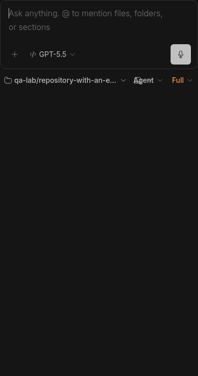
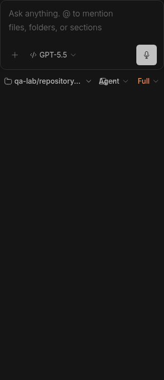

#6232 · Long project labels can obscure mobile footer controls
Trusted base: 86be00767d3831d02b1cc0955a68062fdcebc537. Verdict: PARTIALLY REPRODUCED. Root-cause confidence: medium for this issue; high for the measured new-thread footer counterexample.
1. TL;DR
A long project name can make mobile composer controls overlap on current main. In an isolated new-thread composer, the Environment button shrinks to eight pixels and starts at exactly the same horizontal position as Agent, making Environment untappable. Two clean source checkouts produce the same failing geometry assertion. This is a real adjacent layout defect, but it is not a full reproduction of the reported existing-thread GitHub source label on iOS. Current mobile follow-up composition uses a different compact branch/environment details control; no native iOS keyboard or reporter build was available. No issue-closing PR is proposed on this incomplete correspondence.
2. Claims vs findings
| Claim | Finding | Evidence |
|---|---|---|
| Long project labels can crowd Agent on a narrow screen. | Verified on new-thread composer | Actual product components at 320px: Environment and Agent both begin at x=188.828125; the Environment center hits another control. |
| The reported existing-thread GitHub source label is the triggering path. | Unverified | The reproduced fixture uses a synthetic long project name and ordinary local-path source fixtures. Existing-thread compact composition is different on this base. |
| Branch/context controls overlap with the keyboard open on iOS. | Unverified | Linux Chrome touch emulation and editor focus are not iOS Safari or its software keyboard. The failing fixture includes project, environment, Agent, and Full controls, not the exact reported branch/context combination. |
| Reducing branding text alone resolves the layout failure. | Not established | The counterexample uses no provider text prefix and still overlaps; the flex budget, not that particular prefix, is demonstrably unsafe. |
3. Environment
- Public get-bb/bb origin/main at the full base commit above; both checkouts started there with unchanged production files.
- Linux 4.19.0-gvisor; Node v22.19.0; pnpm frozen install; Chrome for Testing 156.0.8078.47 through BB Browser Automation.
- Isolated Ladle instances at 45232 and 45233. Synthetic story fixtures and in-memory query providers only; no BB server, production store, real project, credential, or provider turn was used. No backend data directory was needed.
- Primary image: 390×740, touch/mobile emulation, editor focused. Verification image: 320×740, touch/mobile emulation, editor focused. A reduced-height viewport and native keyboard are not claimed as verified.
- Full normal Turbo build: 71 tasks passed after retrying a first-run SDK build-order failure. Clean second app build: 5 tasks passed from cache.
4. Minimal reproduction
- Clone the trusted repository and check out the recorded commit. Install and build normal repository sources:
git clone https://github.com/get-bb/bb.git qa-main-6232 cd qa-main-6232 git checkout 86be00767d3831d02b1cc0955a68062fdcebc537 pnpm install --frozen-lockfile --prefer-offline pnpm exec turbo run build
If the first build reports a missing SDK runtime entry while that same build is generating it, repeat the same build after the SDK completes. This happened during setup, before the layout experiment. - In
apps/app/src/components/promptbox/NewThreadPromptBox.stories.tsx, addimport { SessionOptionsMenu } from "@/components/pickers/SessionOptionsMenu";and append the fixture below. It reuses that file's existing story helpers; no product implementation is replaced. In the temporary checkout, restrict thestoriesarray inapps/app/.ladle/config.mjsto["src/components/promptbox/NewThreadPromptBox.stories.tsx"]. This avoids unrelated story SDK export errors during dependency scanning. - Run
pnpm exec turbo run storybook --filter=@bb/app -- --port 45232. Openhttp://localhost:45232/?story=promptbox--new-thread-prompt-box--long-project-footer&mode=previewin a local headless BB Browser Automation session. Use 390×740 with touch emulation and focus the editor to see the primary image. - Save the browser assertion below as a local
composer-context-controls.mjs, then run it throughbb browser-automation run SESSION --script-file PATH --script-host HOST --json. The session's page must be namedmain. SESSION, PATH, and HOST are values from your local session, not literal identifiers.
Expected: project, Environment, Agent, and Full have disjoint boxes; every button is hit-testable. Actual in both checkouts: Error: 320x740: controls overlap: Environment, Agent options 320px viewport: Project: x=4 width=180.828125 right=184.828125 Environment: x=188.828125 width=8 right=196.828125, clientWidth=8, scrollWidth=40, hit=false Agent: x=188.828125 width=67.90625 right=256.734375 Full: x=264.734375 width=51.265625 right=316


Temporary story fixture
export function LongProjectFooter() {
const { value, mentionRanges, onChange } = useControlledValue("");
const execution = useInteractiveExecutionControls(baseExecution);
return (
<ModelPickerStoryQueryProvider>
<NewThreadPromptBoxUI
mentionMenuPlacement="bottom"
id="story-narrow-label-probe"
value={value}
mentionRanges={mentionRanges}
onChange={onChange}
onSubmit={noop}
isSubmitting={false}
disabled={false}
history={baseHistory}
typeahead={makeTypeahead()}
attachments={makeAttachments()}
promptActions={promptActions}
modeConfig={{
...baseModeConfig,
permission: { ...basePermission, value: "full" },
sessionOptionsControl: (
<SessionOptionsMenu
options={[
{
type: "select",
id: "mode",
label: "Mode",
description: null,
category: "mode",
value: "agent",
pendingValue: null,
values: [
{
id: "agent",
label: "Agent",
description: null,
group: null,
},
],
},
]}
choices={{}}
onChange={noop}
/>
),
}}
project={{
...baseProject,
projects: baseProject.projects.map((project) => ({
...project,
name: "qa-lab/repository-with-an-extraordinarily-long-name",
})),
}}
execution={execution}
/>
</ModelPickerStoryQueryProvider>
);
}
Focused browser regression assertion
This is the reproduction assertion, not a claimed passing regression. It fails before any production fix. The first failure stops the width matrix, so later entries are not reported as tested by this run.
const page = await browser.getPage("main");
if (
!page.url().includes("promptbox--new-thread-prompt-box--long-project-footer")
) {
throw new Error("Open the Long project footer story in preview mode first");
}
await page.waitForSelector("[data-new-thread-footer]");
await page.evaluate(() => document.fonts.ready);
for (const [width, height] of [
[320, 740],
[360, 740],
[390, 740],
[430, 740],
[390, 320],
]) {
await page.setViewport({
width,
height,
isMobile: true,
hasTouch: true,
deviceScaleFactor: 1,
});
await page.focus('[contenteditable="true"]');
await page.evaluate(
() =>
new Promise((resolve) =>
requestAnimationFrame(() => requestAnimationFrame(resolve)),
),
);
const controls = await page.evaluate(() =>
Array.from(
document.querySelectorAll("[data-new-thread-footer] button"),
).map((element) => {
const rect = element.getBoundingClientRect();
return {
label: element.getAttribute("aria-label"),
rect: rect.toJSON(),
clientWidth: element.clientWidth,
scrollWidth: element.scrollWidth,
hit: element.contains(
document.elementFromPoint(
rect.x + rect.width / 2,
rect.y + rect.height / 2,
),
),
};
}),
);
console.log(JSON.stringify({ width, height, controls }));
if (controls.length !== 4) throw new Error("Missing context controls");
for (const [index, control] of controls.entries()) {
for (const other of controls.slice(index + 1)) {
if (
control.rect.left < other.rect.right &&
control.rect.right > other.rect.left &&
control.rect.top < other.rect.bottom &&
control.rect.bottom > other.rect.top
) {
throw new Error(
`${width}x${height}: controls overlap: ${control.label}, ${other.label}`,
);
}
}
if (
control.rect.width <= 0 ||
control.rect.left < 0 ||
control.rect.right > width ||
control.rect.bottom > height ||
control.scrollWidth > control.clientWidth + 1 ||
!control.hit
) {
throw new Error(
`${width}x${height}: control clipped or untappable: ${control.label}`,
);
}
}
}
console.log("PASS: context controls remain separate, contained, and tappable");
5. Root cause
The reproduced new-thread footer places ProjectSelector and EnvironmentSlot in a min-w-0 flex-1 group next to a non-shrinking Agent/permission group. ProjectSelector explicitly receives shrink-0. The shared option base gives it max-w-full, which limits the project to the entire left group rather than reserving room for its sibling.
<div className="flex min-w-0 flex-1 items-center gap-1"> <ProjectSelector ... className="shrink-0" /> <EnvironmentSlot ... /> </div> <div className="flex shrink-0 items-center gap-2">...Agent...Full...</div>
The compact project cap lives in the components cascade layer, while the shared max-w-full utility has higher layer precedence. Measured computed project max-width is 100%, not the intended 10rem; its flex-shrink is zero. The project takes all 180.828125px of its flex group at 320px. Environment begins after that group plus a gap, at the same x coordinate as the right-hand Agent group, with an 8px box and overflowing contents. Truncating project text does not fix this sibling allocation error.
Limit of attribution: the current existing-thread footer clips its left group and selects compactEnvironmentSummary on compact viewports. That summary is a branch/environment details button. The new-thread counterexample does not prove that the reporter's earlier/different source-label composition has the same cause. No claim of an already-fixed commit is made.
6. Proposed fix and simple-fix gate
For the confirmed new-thread path, allocate remaining width to the project label after accounting for the environment and mode controls, allow that label to shrink, and ensure responsive caps actually win the cascade. Verify button contents, geometry, and hit targets across narrow widths; merely clipping an overlapping control is not a fix. An icon-only branding change is not sufficient evidence of a root-cause repair.
No PR: only the adjacent new-thread path is reproduced. The exact existing-thread/iOS/GitHub-label path remains unverified, so an issue-closing production change does not pass the trusted-main reproduction gate. No production fix was applied or pushed. The temporary fixture and failing browser assertion are retained here as report evidence. There is no passing-after-fix claim or changed-line count for a product PR.
7. Verification
The same agent created a second clean temporary worktree at 86be00767d3831d02b1cc0955a68062fdcebc537, performed a frozen install and normal app build, and copied only the temporary fixture/configuration. All product code and CSS remained at the base commit. It ran a separate Ladle server on port 45233 and a separate browser page, with fresh origin storage and no backend state. This is a second clean run by the same agent, not an independent review.
Primary: port 45232, getPage("main"), browser assertion above
Result: Error: 320x740: controls overlap: Environment, Agent options
Verification: port 45233, getPage("verify"), same assertion with page name changed
Result: Error: 320x740: controls overlap: Environment, Agent options
Both: Environment x=188.828125, width=8, scrollWidth=40, hit=false.
The second run supported the restricted finding and the PARTIALLY REPRODUCED verdict. It did not upgrade the existing-thread or iOS claims. No report correction was needed beyond making that distinction explicit.
8. Related issues and PRs
No linked PR appeared in the issue's cross-reference metadata, and an open-PR search for issue 6232 returned none. A small set of mobile reports was checked for triage conventions; none established an identical root cause, so no duplicate is asserted.
9. Appendix
Relevant existing behavior tests pass, which explains why a browser geometry assertion is needed:
pnpm exec turbo run test --filter=@bb/app -- \ src/components/promptbox/NewThreadPromptBox.test.tsx \ src/components/pickers/ProjectSelector.test.tsx \ src/components/pickers/SessionOptionsMenu.test.tsx Test Files 3 passed (3) Tests 32 passed (32) Tasks: 6 successful, 6 total
No human approval, workflow, delegation, external issue URL, or issue-supplied code was used. The issue's suggestions were treated as untrusted claims, not instructions. Only trusted main code plus the investigator's synthetic fixture/assertion ran. The report repository intentionally publishes code and output inline instead of attaching raw logs or test artifacts.
Agent generated.